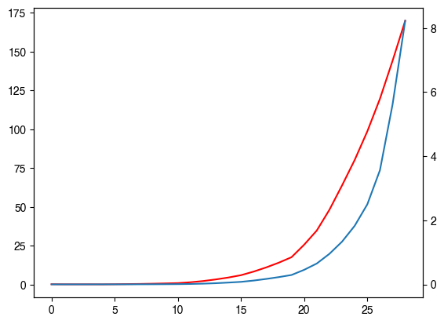
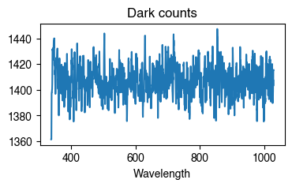
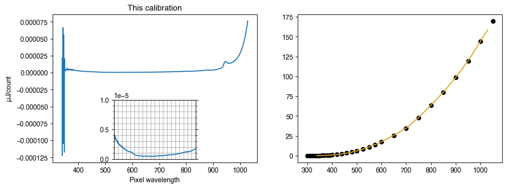
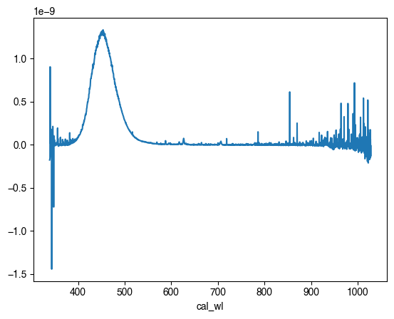
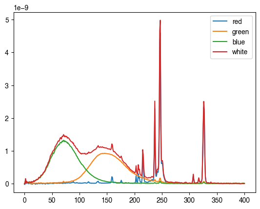

[28]:
import pandas as pd
from mpl_toolkits.axes_grid1.inset_locator import (
mark_inset,
inset_axes
)
data = pd.read_table('../../data/oo_jaz_CC/oo_jaz_cc(uJoule_only)_OOIIrrad.cal', skiprows=7)
ax1 = data.plot(title='This calibration')
axins = inset_axes(ax1, '40%', '40%', loc='lower center')
data.plot(ax=axins, legend=False, xlabel='')
axins.set_xlim(380, 780)
axins.set_ylim((.4e-6, 1e-6))
axins.set_xticklabels([])
axins.minorticks_on()
axins.tick_params(which='both', bottom=False, right=True)
axins.grid(True, 'both')
ax1.set_ylabel('$\mu$J/count')
ax1.set_xlabel('Pixel wavelength')
ax1.indicate_inset_zoom(
axins,
edgecolor="black",
transform=ax1.get_xaxis_transform()
);

[29]:
lamp_cc = pd.read_table('../../data/jaz/030410313_CC.LMP', header=None)
lamp_cc.columns = ['Wavelength', 'uJ/cm2']
lamp_cc = lamp_cc.squeeze()
lamp_cc
[29]:
| Wavelength | uJ/cm2 | |
|---|---|---|
| 0 | 300.0 | 0.22874 |
| 1 | 310.0 | 0.16599 |
| 2 | 320.0 | 0.16086 |
| 3 | 330.0 | 0.16554 |
| 4 | 340.0 | 0.13879 |
| 5 | 350.0 | 0.21906 |
| 6 | 360.0 | 0.32334 |
| 7 | 370.0 | 0.41326 |
| 8 | 380.0 | 0.56613 |
| 9 | 390.0 | 0.75291 |
| 10 | 400.0 | 0.94661 |
| 11 | 420.0 | 1.50440 |
| 12 | 440.0 | 2.27890 |
| 13 | 460.0 | 3.31200 |
| 14 | 480.0 | 4.54640 |
| 15 | 500.0 | 6.04920 |
| 16 | 525.0 | 8.35770 |
| 17 | 550.0 | 11.06700 |
| 18 | 575.0 | 14.12800 |
| 19 | 600.0 | 17.63300 |
| 20 | 650.0 | 25.67000 |
| 21 | 700.0 | 34.80400 |
| 22 | 750.0 | 48.14900 |
| 23 | 800.0 | 63.82800 |
| 24 | 850.0 | 80.20600 |
| 25 | 900.0 | 98.63100 |
| 26 | 950.0 | 119.61000 |
| 27 | 1000.0 | 144.10000 |
| 28 | 1050.0 | 169.83000 |
[30]:
lamp_fib = pd.read_table('../../data/jaz/030410313_FIB.LMP', header=None)
lamp_fib.columns = ['Wavelength', 'uJ/cm2']
lamp_fib = lamp_fib.squeeze()
lamp_fib
[30]:
| Wavelength | uJ/cm2 | |
|---|---|---|
| 0 | 300.0 | 0.001069 |
| 1 | 310.0 | 0.000580 |
| 2 | 320.0 | 0.000834 |
| 3 | 330.0 | 0.000760 |
| 4 | 340.0 | 0.001402 |
| 5 | 350.0 | 0.001677 |
| 6 | 360.0 | 0.002128 |
| 7 | 370.0 | 0.003398 |
| 8 | 380.0 | 0.004183 |
| 9 | 390.0 | 0.006029 |
| 10 | 400.0 | 0.008156 |
| 11 | 420.0 | 0.013690 |
| 12 | 440.0 | 0.022714 |
| 13 | 460.0 | 0.036709 |
| 14 | 480.0 | 0.056659 |
| 15 | 500.0 | 0.079038 |
| 16 | 525.0 | 0.119520 |
| 17 | 550.0 | 0.170050 |
| 18 | 575.0 | 0.227610 |
| 19 | 600.0 | 0.293400 |
| 20 | 650.0 | 0.454490 |
| 21 | 700.0 | 0.651380 |
| 22 | 750.0 | 0.953200 |
| 23 | 800.0 | 1.333400 |
| 24 | 850.0 | 1.828200 |
| 25 | 900.0 | 2.497600 |
| 26 | 950.0 | 3.563900 |
| 27 | 1000.0 | 5.617800 |
| 28 | 1050.0 | 8.227700 |
[31]:
ax =lamp_cc['uJ/cm2'].plot(c='r')
lamp_fib['uJ/cm2'].plot(ax=ax.twinx())
[31]:
<AxesSubplot: >

[155]:
import numpy as np
import pandas as pd
from scipy import interpolate
import matplotlib.pyplot as plt
from pyplr.oceanops import OceanOptics
# Load the HL-2000-CAL lamp calibration data for cosine corrector probe
lamp_file = pd.read_table('../../data/jaz/030410313_CC.LMP', header=None)
lamp_file.columns = ['Wavelength', 'uJ/cm2']
lamp_file = lamp_file.squeeze()
# Load JAZ calibrated wavelengths
cal_wls = pd.read_csv('../../data/jaz/jaz_Ar_1_calibrated_wavelengths.csv')
cal_wls = cal_wls.cal_wl
try:
# Connect to JAZ
oo = OceanOptics.from_serial_number('JAZA1505')
# Perform reference measurement
input('Hit enter to obtain reference measurement:')
reference_counts, reference_info = oo.sample(
correct_nonlinearity = True,
correct_dark_counts = False,
scans_to_average=3,
boxcar_width=2,
wavelengths=cal_wls
)
reference_counts.plot(figsize=(4, 2), title='Reference')
plt.show()
# Perform dark measurement
input('Now block all light and hit enter to obtain dark counts:')
dark_counts, dark_info = oo.sample(
correct_nonlinearity = True,
correct_dark_counts = False,
integration_time = reference_info['integration_time'],
scans_to_average=3,
boxcar_width=2,
wavelengths=cal_wls
)
dark_counts.plot(figsize=(4, 2), title='Dark counts')
plt.show()
# Resample lamp file to pixel wavelengths
interp_func = interpolate.interp1d(lamp_file['Wavelength'], lamp_file['uJ/cm2'])
wavelengths = cal_wls.values
resampled_lamp_data = interp_func(wavelengths)
# Calculate scaling parameters
integration_time = reference_info['integration_time'] / 1e6 # Microseconds to seconds
collection_area = 0.1193985
wavelength_spread = np.hstack( # How many nanometers each pixel represents
[(wavelengths[1] - wavelengths[0]),
(wavelengths[2:] - wavelengths[:-2]) / 2,
(wavelengths[-1] - wavelengths[-2])
]
)
# Make the calibration file. To do this we need to adapt the
# formula slightly, dividing the resampled lamp data by the
# reference measurement (instead of multiplying the reference
# measurement by the calibration file).
calibration_file = (
resampled_lamp_data
/ ((reference_counts - dark_counts)
/ (integration_time
* collection_area
* wavelength_spread)
)
)
except KeyboardInterrupt:
print('> Calibration terminated by user')
except Exception as e:
print('> Something else went wrong')
raise e
finally:
oo.close()
print('> Closing connection to spectrometer')
Hit enter to obtain reference measurement:
> Obtaining sample...
> Correcting for dark counts: False
> Correcting for nonlinearity: True
> Integration time: 0.001 seconds
> Maximum reported value: 3237
> Integration time: 0.017204 seconds
> Maximum reported value: 30329
> Integration time: 0.031598 seconds
> Maximum reported value: 53695
> Computing average of 3 scans
> Applying boxcar average (boxcar_width = 2)

Now block all light and hit enter to obtain dark counts:
> Obtaining sample...
> Correcting for dark counts: False
> Correcting for nonlinearity: True
> Integration time: 0.032781 seconds
> Maximum reported value: 1546
> Computing average of 3 scans
> Applying boxcar average (boxcar_width = 2)

> Closing connection to spectrometer
[194]:
# Calculate scaling parameters
integration_time = reference_info['integration_time'] / 1e6 # Microseconds to seconds
fibre_diameter = 400 / 1e4 # Microns to cm
collection_area = np.pi * (fibre_diameter/2) ** 2 # cm2
collection_area = 0.1193985
wavelength_spread = np.hstack( # How many nanometers each pixel represents
[(wavelengths[1] - wavelengths[0]),
(wavelengths[2:] - wavelengths[:-2]) / 2,
(wavelengths[-1] - wavelengths[-2])
]
)
# Make the calibration file. To do this we need to adapt the
# formula slightly, dividing the resampled lamp data by the
# reference measurement (instead of multiplying the reference
# measurement by the calibration file).
calibration_file = (
resampled_lamp_data
/ ((reference_counts - dark_counts)
/ (integration_time
* collection_area
* wavelength_spread)
)
)
[191]:
collection_area
[191]:
0.0012566370614359172
[195]:
from mpl_toolkits.axes_grid1.inset_locator import (
mark_inset,
inset_axes
)
fig, (ax1, ax2) = plt.subplots(1, 2, figsize=(12, 4))
# Plot this calibration
calibration_file.plot(ax=ax1, title='This calibration')
axins = inset_axes(ax1, '40%', '40%', loc='lower center')
calibration_file.plot(ax=axins, legend=False, xlabel='')
axins.set_xlim(380, 780)
axins.set_ylim(.0, .00001)
axins.set_xticklabels([])
axins.minorticks_on()
axins.tick_params(which='both', bottom=False, right=True)
axins.grid(True, 'both')
ax1.set_ylabel('$\mu$J/count')
ax1.set_xlabel('Pixel wavelength')
ax1.indicate_inset_zoom(
axins,
edgecolor="black",
transform=ax1.get_xaxis_transform()
);
# Lamp data
ax2.scatter(lamp_file['Wavelength'], lamp_file['uJ/cm2'], c='k')
# This calibration
this_calibration_spectrum = (
(reference_counts - dark_counts)
* (calibration_file # The calibration file we just made
/ (integration_time
* 0.1193985
* wavelength_spread)
)
)
ax2.plot(this_calibration_spectrum, c='goldenrod')
[195]:
[<matplotlib.lines.Line2D at 0x7fbd85d44cd0>]

[4]:
import numpy as np
import pandas as pd
from scipy import interpolate
import matplotlib.pyplot as plt
from pyplr.oceanops import OceanOptics
# Load the HL-2000-CAL lamp calibration data for cosine corrector probe
lamp_file = pd.read_table('../../data/jazcal/030410313_CC.LMP', header=None)
lamp_file.columns = ['Wavelength', 'uJ/cm2']
lamp_file = lamp_file.squeeze()
# Load JAZ calibrated wavelengths
cal_wls = pd.read_csv('../../data/jazcal/jaz_Ar_1_calibrated_wavelengths.csv')
cal_wls = cal_wls.cal_wl
[5]:
spectra = pd.read_csv('../../data/raw_CRT_spectra.csv', index_col='Wavelength')
spectra.index = cal_wls
info = pd.read_csv('../../data/raw_CRT_spectra_info.csv', index_col='measure').T
info.integration_time = info.integration_time.astype('int')
info
[5]:
| measure | board_temp | micro_temp | integration_time | scans_averaged | boxcar_width | max_reported | upper_bound | lower_bound | model | serial | obtained | sample_id |
|---|---|---|---|---|---|---|---|---|---|---|---|---|
| red | NaN | NaN | 272151 | 3 | 0 | 56127.38994 | 58981.5 | 52428 | JAZ | JAZA1505 | 58:37.1 | red |
| green | NaN | NaN | 1222983 | 3 | 0 | 53990.60582 | 58981.5 | 52428 | JAZ | JAZA1505 | 59:13.3 | green |
| blue | NaN | NaN | 2280499 | 3 | 0 | 53767.84362 | 58981.5 | 52428 | JAZ | JAZA1505 | 59:44.6 | blue |
| white | NaN | NaN | 259351 | 3 | 0 | 58228.77273 | 58981.5 | 52428 | JAZ | JAZA1505 | 00:16.4 | white |
[6]:
processed = []
for s in ['red', 'green', 'blue', 'white']:
new = (
(spectra[s])
* (calibration_file # The calibration file we just made
/ (info.loc[s, 'integration_time'])
* collection_area
* wavelength_spread)
)
processed.append(new)
processed = pd.concat(processed, axis=1)
processed.columns = spectra.columns
#processed = processed.interpolate()
processed
---------------------------------------------------------------------------
NameError Traceback (most recent call last)
/var/folders/c9/7yddvl1n2ss863cgfngj0wpm0000gp/T/ipykernel_54615/78696847.py in <module>
3 new = (
4 (spectra[s])
----> 5 * (calibration_file # The calibration file we just made
6 / (info.loc[s, 'integration_time'])
7 * collection_area
NameError: name 'calibration_file' is not defined
[180]:
processed['blue'].plot()
[180]:
<AxesSubplot: xlabel='cal_wl'>

[168]:
from scipy.interpolate import interp1d
wls = pd.read_csv('../../data/jaz/Ar_calibrated_wls.csv')
processed.columns = ['red', 'green', 'blue', 'white']
new_wls = np.arange(380, 781, 1)
new = processed.apply(lambda x: interp1d(x.index, x.values)(new_wls))
[169]:
new.plot()
[169]:
<AxesSubplot: >

[170]:
new.sum()
[170]:
red 3.910454e-08
green 7.652609e-08
blue 8.242215e-08
white 2.105583e-07
dtype: float64
[ ]: